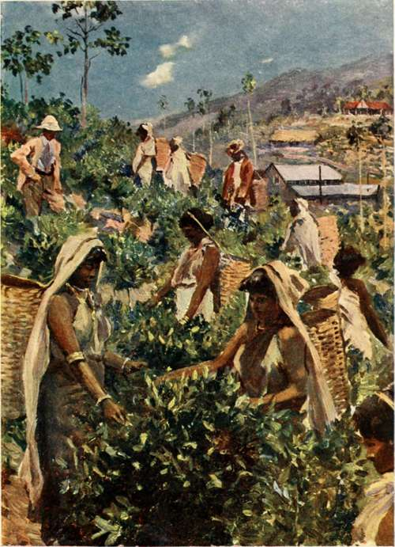
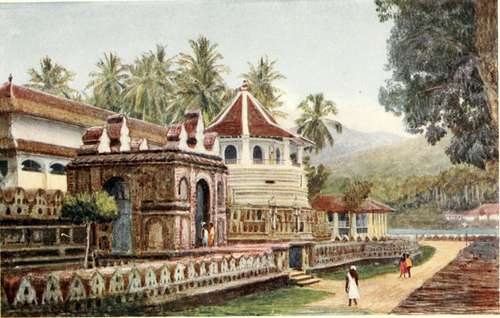

Chapter XIII. The Tea Districts
Description
This section is from the book "Ceylon", by Alfred Clark. Also available from Amazon: Ceylon.
Chapter XIII. The Tea Districts
Some sixty or seventy years ago the highlands of Ceylon were covered with an almost unbroken sheet of forest. This has been gradually cleared away, till now the only forest remaining lies along the crests of the hills, which has been preserved for climatic reasons.
For many years coffee was the staple product of the hills, but the ravages of leaf-disease destroyed it, and now scarcely any coffee - bushes remain, except the semi-wild ones near native huts. The hillsides are now covered with tea-estates, varying in size from a few score to many hundreds of acres in extent. The railway passes through the heart of the hills, first-class roads give access to the different districts, most of which have mellifluous native names, and many hospitals, churches, and schools have been built.
Several hundred British planters superintend the cultivation and manufacture of tea, and lead a pleasant life in the health-giving hills. They are hard-working men, yet find time to get a good deal of amusement in the form of tennis, cricket, football, golf, and other field-sports.
A Tea Estate.
Every estate is intersected with well - laid - out riding roads, and is covered with a network of drains. Near the main road, and in a position convenient for the application of water-power, stands the factory where the tea is manufactured. Above it, on some sheltered knoll, is the superintendent's bungalow. In the hollows, near the streams trickling down the hillsides, are the different coolie-lines, where the estate labourers live. Groves and belts of fuel trees diversify the scene.
The tea-bushes are pruned down so as not to exceed four feet in height, for convenience of plucking. Only the tender leaf-shoots are used in the manufacture of tea, and it depends on the proportion of particular leaflets used in each make of tea whether it will be graded as "Pekoe," "Pekoe Souchong," etc. Plucking is carried on only when the tea-bushes are " flushing"—that is, budding freely, in consequence of bright sunshine following copious showers, or other cause.
The Temple Of The Sacred Tooth, Kandy.
After the green leaf has been plucked, principally by the coolie women and children, it is scarcely touched by the human hand. It is withered with the aid of great revolving fans, and then rolled, dried, and sifted, and undergoes other processes, till it leaves the factory in large lead-lined boxes, graded ready for shipment. The machinery employed is very up-to-date, and is the outcome of years of experience and experiment.
Above four thousand feet tea only is grown, and it is superior in quality to that grown at lower elevations. Many other products flourish on the lower slopes of the hills, such as rubber, cocoa, cinchona, cardamoms, etc.
During the last few years many thousands of acres have been planted with indiarubber-trees, and it is probable that before long Ceylon will be the greatest producer of plantation rubber in the world. Incisions are made in the outer bark of the trees, and the sap thus caused to flow is collected, and treated in various ways till it is converted into the marketable form of "biscuits," large, flat, semi-transparent cakes.
Not far short of half a million coolies are employed on the tea and other estates, and the vast majority of them are immigrant Tamils from South India. Many of them have now settled permanently in the country, having found it an El Dorado. They are nearly all heathen, but are very lax in their religious observances, though many estates have tiny swami-houses, or temples, where offerings to demons are made.
There is work for all on a tea-estate, the men doing the road-making, draining, pruning, and other heavy jobs, and the women and children the plucking and the weeding.
A curious sight, often to be seen when all the women on an estate are called out to pluck a heavy " flush," is the tree-nursery, to the branches of which a dozen or more brown babies are slung in cloths, watched by a tiny girl, while the mothers work.
The coolie women have a comical way of washing their babies. The mother squats on the ground with her legs stretched out, and the baby lying between them. In that position the little brown thing is gently kneaded and rubbed, and water poured over it, and, when dry, is sometimes oiled from head to foot.
Continue to: